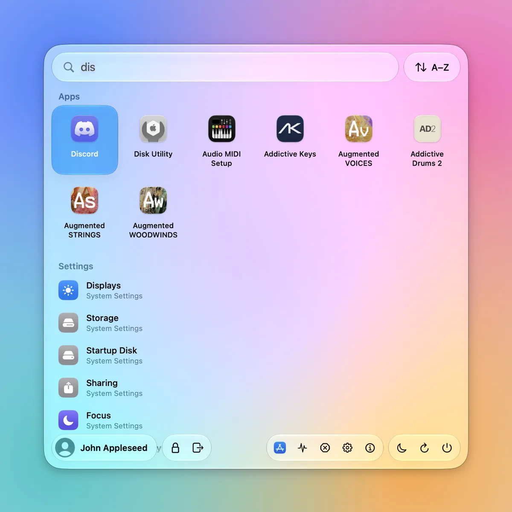

قائمة ابدأ لجهاز الماك، على بُعد مفتاح واحد.
macOS Start Menu (أي «قائمة ابدأ لنظام macOS») مشغّل تطبيقات مجاني يجلب قائمة ابدأ من ويندوز إلى macOS. تُفتح لوحة أسفل شريط القائمة مباشرة وحقل البحث جاهز للكتابة: تطبيقات ومجلدات وإعدادات النظام — دون المستندات والأرشيفات والملفات المؤقتة التي يستخرجها Spotlight. ومع اختفاء Launchpad في macOS Tahoe، صار أسرع طريق للوصول إلى كل تطبيق.
اضغط Command
اضغط ⌘ وحده ثم أفلته، مثل مفتاح ويندوز. ولا تتأثر الاختصارات مثل ⌘C إطلاقًا.
بحث فوري
بمجرد الكتابة تُرتَّب تطبيقاتك وتُقترح أقسام إعدادات النظام المطابقة، باسمها العربي أو الإنجليزي.
رتّب على طريقتك
أبجديًا، أو حسب الأحدث استخدامًا، أو الأكثر استخدامًا، أو الفئة — في شبكة أو قائمة.
الطاقة في متناول يدك
القفل وتسجيل الخروج والإسبات وإعادة التشغيل وإيقاف التشغيل، إضافة إلى App Store ومراقب النشاط والإنهاء الإجباري.
إلغاء تثبيت نظيف
انقر بزر الماوس الأيمن على تطبيق لنقله إلى المهملات مع التفضيلات والملفات المؤقتة التي خلّفها.
تخلّص من الفوضى
لا يمكن حذف تطبيقات النظام، لكن يمكنك إخفاء ما لا تستخدمه منها.
الملفات الحديثة والتثبيت
تظهر أحدث مستنداتك فوق التطبيقات. اسحب الملفات أو المجلدات أو التطبيقات إلى القائمة لتثبيتها، واسحب العناصر المثبتة لإعادة ترتيبها.
الآلة الحاسبة والويب
اكتب 12*7 أو 20% of 85 لتحصل على النتيجة، وشغّل اختصاراتك، أو ابحث في الويب.
مفتاحك أو شعار Apple
افتحها بأي مفتاح ⌘ أو ⌘ الأيمن أو ⌥ أو مفتاح الكرة الأرضية، أو بالنقر على شعار Apple.
التطبيقات والإعدادات، جنبًا إلى جنب.
اكتب بضعة أحرف: تظهر التطبيقات المطابقة أولًا، ثم أقسام إعدادات النظام المرتبطة بها.
- مطابقة متسامحة — بدايات الكلمات والأحرف الأولى وحتى الأخطاء الإملائية توصلك إلى تطبيقك.
- إعدادات حسب المعنى — «شاشات العرض» أو «wifi» أو «الصوت» تفتح القسم المناسب.
- لوحة المفاتيح أولًا — الأسهم للتنقل، وReturn للفتح، وEscape للإغلاق.

Liquid Glass أو كلاسيكي.
مبني بتصميم Liquid Glass الأصلي في macOS Tahoe. تفضّل شيئًا أبسط؟ غيّر النمط من قائمة الإعدادات.


الاختصارات
كل شيء يعمل من لوحة المفاتيح.
| ⌘ وحده | فتح القائمة أو إغلاقها |
| الكتابة | البحث في التطبيقات والإعدادات |
| ←→↑↓ | التنقل بين النتائج |
| ↩ | فتح العنصر المحدد |
| esc | إغلاق |
| ⌘Q والقائمة مفتوحة | إنهاء Start Menu |
أسئلة شائعة
كيف أحصل على قائمة ابدأ في الماك؟
ثبّت macOS Start Menu، واسمح له في الخصوصية والأمن › تسهيلات الاستخدام، ثم اضغط مفتاح ⌘ Command وحده. تُفتح قائمة ابدأ على طريقة ويندوز أسفل شريط القائمة، وفيها كل تطبيقاتك وحقل بحث وأزرار الطاقة.
هل هو بديل لـ Launchpad في macOS Tahoe؟
نعم. استبدل macOS 26 Tahoe ميزة Launchpad بعرض التطبيقات. ويمنحك macOS Start Menu شبكة أو قائمة سريعة لكل تطبيقاتك، مصممة للوحة المفاتيح أولًا، ومرتبة أبجديًا أو حسب الاستخدام الأخير أو الأكثر استخدامًا أو الفئة.
لماذا يعرض Spotlight الملفات بدل التطبيقات؟
يُخفي Spotlight الفئات التي توقفها، لكن الملفات التي لا يستطيع تصنيفها (ملفات الألعاب والأرشيفات والملفات المؤقتة) تظل تظهر. أما Start Menu فيقرأ مجلدات تطبيقاتك مباشرة، فلا يعرض إلا التطبيقات وأقسام إعدادات النظام ومجلداتك الرئيسية.
هل يعطّل الضغط على ⌘ اختصارات لوحة المفاتيح؟
لا. تُفتح القائمة فقط عند ضغط ⌘ وإفلاته وحده خلال نصف ثانية. ويعمل ⌘C و⌘V وكل الاختصارات الأخرى كالمعتاد.
هل macOS Start Menu مجاني؟
نعم، تنزيله مجاني. والشيفرة المصدرية متاحة على GitHub.
ما أجهزة الماك المدعومة؟
أجهزة الماك المزودة بشريحة Apple silicon والتي تعمل بنظام macOS 26 Tahoe أو أحدث.
تثبيت macOS Start Menu
موقَّع وموثَّق من Apple: يُفتح مثل أي تطبيق آخر.
نزّل التطبيق وثبّته
افتح Start-Menu.dmg واسحب Start Menu إلى مجلد التطبيقات.
امنح إذن تسهيلات الاستخدام
فعّل Start Menu في الخصوصية والأمن › تسهيلات الاستخدام. هذا ضروري لالتقاط مفتاح ⌘ في أي مكان.
أو ثبّته باستخدام Homebrew:
brew tap corentin-gautier/tap
brew trust --cask corentin-gautier/tap/macos-start-menu
brew install --cask corentin-gautier/tap/macos-start-menuأو ابنِه من الشيفرة المصدرية (Xcode أو Command Line Tools):
git clone https://github.com/corentin-gautier/macos-start-menu.git
cd macos-start-menu
scripts/setup-signing.sh # مرة واحدة: شهادة توقيع محلية
scripts/install.sh # البناء والتثبيت والتشغيل عند تسجيل الدخول